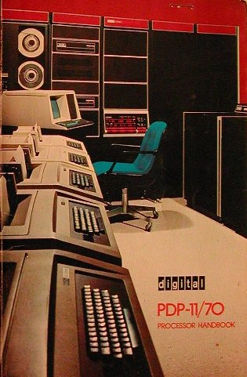
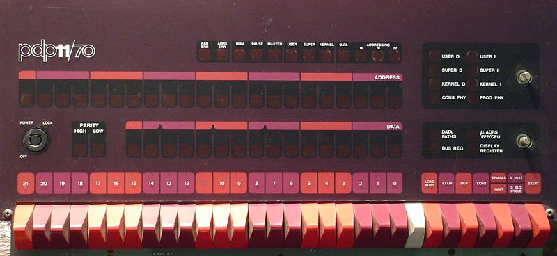

It was very simple to get the simulator running on my Linux system. First download the zip file of the sources for the latest version of SIMH. Unzip and use "make" to build the default target in the makefile. The resulting simulator lacks ethernet support but is sufficient for my plans.
|  |
CPU: PDP-11/70, FPP,
512KW memory (16-bit words)
Disk Drives:
(4) RK05 ( 2.5 MB each)
(2) RL01 ( 5 MB each)
(2) RL02 ( 10 MB each)
(4) RP06 ( 174 MB each)
Mag Tape: (2) TU77 drives
Paper Tape Reader and Punch
LP11-S Line Printer
Console Terminal (132 columns)
DZ11 (8) serial lines
KW11-L Line Clock
|
Unfortunately, SIMH does not provide the sexiest peripheral, the operator's console with switches and lights. For me the lights are very much of interest. Just seeing something strange in the lights led to finding and fixing a bug in the SPM-11M data collector.
When run on certain PDP-11 processors, each DEC Operating System displayed a characteristic light pattern on the front of the processor any time the system was idle. The RSX-11M light pattern was two sets of lights that swept outwards to the left and right from the center of the light display (or inwards if the IND indirect command file processor program was currently running). The IAS light pattern was a single bar of lights that swept leftwards. Correspondingly, a jumbled light pattern (reflecting memory fetches) was a visible indication that the computer was under load as this meant that the system idle process (known as a task under RSX), which set the moving light pattern, was not being run.
|  |
The RSX-11M V3.2 install media are gzip compressed RL01 disk images. Once these files are de-compressed with gzip or zcat, the resulting image file can be directly used with SIMH. When I use this media, the de-compressed files will be renamed to have the kind of disk as the type, for example, RSX-11M_V3.2_RSX11MBL26_3.2.rl01
Index of /bits/DEC/pdp11/discimages/rl01/rsx11m_3.2
F4_IAS_RSX_2.1.DSK.gz
RSX-11M_V3.2_AUTOPATCH1B.DSK.gz
RSX-11M_V3.2_MAPSRC.DSK.gz
RSX-11M_V3.2_RLUTIL.DSK.gz
RSX-11M_V3.2_RMSKIT.DSK.gz
RSX-11M_V3.2_RSX11MBL26_3.2.DSK.gz
RSX-11M_V3.2_UNMSRC.DSK.gz
|
Finding the install media was the answer to my desires. I was trained to support RSX-11M V3.* in 1977. Hopefully I still remember enough of the finer points to turn this into a useful system.
RSX11M_3.2ManualList.txt
RSX11_3.2_projPlan_Aug78.pdf
RSX-11M V3.2_MiniReference_May79.pdf AV-5570C-TC
Volume 1: Introduction
AA-2555D-TC_Introduction_to_RSX-11M_Jun79.pdf
AA-2573F-TC_RSX-11M_V3.2_Release_Notes_Jun79.pdf
AA-2593E-TC_RSX-11M_V3.2_Documentation_Directory_May79.pdf
AA-5245B-TC_Beginners_Guide_to_RSX-11M_Jun79.pdf
AA-5430C_TC_RSX-11M_V3.2_Master_Index_Aug79.pdf
AE-3407N-TC_RSX-11M_V3.2_SPD_Dec79.pdf
Volume 2: Operation
RSX-11M System Generation and Management Guide AA-H625A-TC
RSX-11M/M-PLUS MCR Operations Manual AA-H263A-TC
Volume 3: Program Development
RSX-11M/M-PLUS Guide to Program Development AA-H264A-TC
RSX-11M/M-PLUS Task Builder Manual AA-H266A-TC
IAS/RSX-11 MACRO-11 Reference Manual DEC-11-OIMRA-B-D
IAS/RSX-11 ODT Reference Manual DEC-11-OIODA-B-D
RSX-11M Guide to Writing an I/O Driver AA-2600D-TC
IAS/RSX-11 System Library Routines Reference Manual AA-5580A-TC
RSX-11M/M-PLUS Executive Reference Manual AA-H265A-TC
Volume 4: Utilities
RSX-11 Utilities Manual AA-H268A-TC
Volume 5: File Management and I/O
IAS/RSX-11 I/O Operations Reference Manual AA-2515D-TC
RSX-11M/M-PLUS I/O Drivers Reference Manual AA-H269A-TC
RMS-11 User's Guide AA-D538A-TC
RMS-11 Installation Guide AA-H235A-TC
RMS-11 MACRO-11 Reference Manual AA-H683A-TC
Volume 6: Maintenance
RSX-11M/M-PLUS Error Logging Reference Manual AA-H270A-TC
RSX-11M/M-PLUS User Mode Diagnostics Reference Man AA-H271A-TC
|
For writing programs in assembly language, Volumes 3 and 5 will be your guide. (Maybe I'll take this tale far enough to show an example of program development.)
On a simulated system where hardware failures are hidden, Volume 6 is of little use. But other manuals listed in the RSX11M_3.2ManualList.txt may be useful.
The RSX-11M/M-PLUS Crash Dump Analyzer Reference Manual (AA-H272A-TC) will help if the RSX-11M kernel crashes or hangs.
For writing programs in FORTRAN, I think these manuals cover usage of the compiler and runtime library included in the installation media:
PDP-11 FORTRAN Language Reference Manual AA-1855D-TC IAS/RSX-11 FORTRAN IV User's Guide AA-1936E-TC IAS/RSX-11 FORTRAN IV Installation Guide AA-1821D-TC |
For the most part, the above mentioned documents are references, useful when you already know RSX-11M. I also tried to locate some tutorials. Fortunately bitsavers.org has three books from the RSX-11M Operating System Internals course. This course takes one to the plateau of RSX-11M System Programming. I no longer have the equivalent materials from my 1970's training. Even though a newer version of RSX is discussed in the online books, it will largely apply to the task at hand with RSX-11M V3.2.
A web search did not locate an online copy of the RSX-11M V3.2 System Logic Manual (AA-5579B-TC). But bitsavers.org has Volume 1 and Volume 2 of this book for RSX-11M V3.1. The System Logic Manual is probably overkill. It will explain how the core components of RSX-11M work, covering the Executive, File Control Processor and MCR command interpreter. This is useful if one wants to extend the Executive, but not needed for operating a RSX-11M system and developing application programs.
In summary, start by getting familar with Volumes 1,2,4 and maybe the OS Internals Course books.
-rw-r--r-- 1 rob rob 154112 2007-05-05 12:41 F4_IAS_RSX_2.1.DSK.gz -rw-r--r-- 1 rob rob 82 2010-04-17 15:18 README.txt -rw-r--r-- 1 rob rob 383940 2007-05-05 12:41 RSX-11M_V3.2_AUTOPATCH1B.DSK.gz -rw-r--r-- 1 rob rob 1691573 2007-05-05 12:41 RSX-11M_V3.2_MAPSRC.DSK.gz -rw-r--r-- 1 rob rob 1616977 2007-05-05 12:42 RSX-11M_V3.2_RLUTIL.DSK.gz -rw-r--r-- 1 rob rob 524095 2007-05-05 12:42 RSX-11M_V3.2_RMSKIT.DSK.gz -rw-r--r-- 1 rob rob 1607457 2007-05-05 12:42 RSX-11M_V3.2_RSX11MBL26_3.2.DSK.gz -rw-r--r-- 1 rob rob 1639982 2007-05-05 12:42 RSX-11M_V3.2_UNMSRC.DSK.gz drwxr-xr-x 3 rob rob 4096 2010-04-22 22:34 X |
-rw-r--r-- 1 rob rob 5242880 2010-04-18 19:40 F4_IAS_RSX_2.1.rl01 -rw-r--r-- 1 rob rob 5242880 2010-04-18 19:40 RSX-11M_V3.2_AUTOPATCH1B.rl01 -rw-r--r-- 1 rob rob 5242880 2010-04-22 21:46 RSX-11M_V3.2_MAPSRC.rl01 -rw-r--r-- 1 rob rob 5242880 2010-04-22 21:46 RSX-11M_V3.2_RLUTIL.rl01 -rw-r--r-- 1 rob rob 5242880 2010-04-18 19:40 RSX-11M_V3.2_RMSKIT.rl01 -rw-r--r-- 1 rob rob 5243087 2010-04-22 20:22 RSX-11M_V3.2_RSX11MBL26_3.2.rl01 -rw-r--r-- 1 rob rob 5242880 2010-04-22 21:46 RSX-11M_V3.2_UNMSRC.rl01 -rwxr-xr-x 1 rob rob 358 2010-04-21 20:09 run.sh -rw-r--r-- 1 rob rob 3105 2010-04-22 22:34 sim.ini |
#!/bin/sh
# Run simh with config in the current directory...
#
SIMH=/home/R/Prog/Simh/simhv38-1/BIN/pdp11
#
# Get clean copies of install media
for f in ../*.DSK.gz ; do
imgfile=`basename $f | sed -e 's/.DSK.gz/.rl01/'`
if [ ! -f "$imgfile" ]
then
echo Restoring $imgfile
zcat $f > "$imgfile"
fi
done
#
# Now run the simulator
$SIMH ./sim.ini
|
"sim.ini" configures SIMH, selecting the configuration of the PDP-11. This provides a printout of the CSR Address and Interrupt VECTORS for every device. Those numbers will be needed during SYSGEN.
I prefer having separate interfaces for the console used to communicate with the PDP-11 OS vs. the terminal used to control SIMH. This initialization script also opens a separate window for the PDP-11 console terminal. That terminal connects to the simulation by telnet to port 10000. Similarly, the simulator will accept telnet connections to port 10001 for terminals that connect to the DZ11.
What can go into the simulator initialization file and SIMH commands are documented in the generic user guide "simh_doc.pdf" and the specific guide for this simulated machine, "pdp11_doc.pdf".
; SIMH PDP-11 initialization ; record a copy of console output, send debug info to simh's stderr SET CONSOLE LOG=./console.log SET CONSOLE DEBUG=STDERR echo ====================================================================== ; configure the CPU ; (default is 11/73 w/256KB MEM, running unthrottled) SET CPU 11/70, 1M ; throttle not needed because idle detect works with RSX-11M SET CPU IDLE ;SET THROTTLE 500K SHOW CPU ; Configure devices ; disable default devices we don't want/need SET CR DISABLE SET HK DISABLE SET RQ DISABLE SET RX DISABLE SET TM DISABLE SET TQ DISABLE SET XQ DISABLE ; Massbus RP06's for system and spare disks (up to 8 drives)... SET RHA ENABLE SHOW RHA SET RP ENABLE SET RP0 RP06, WRITEENABLED SET RP1 RP06, WRITEENABLED SET RP2 RP06, WRITEENABLED SET RP3 RP06, WRITEENABLED SET RP4 DISABLE SET RP5 DISABLE SET RP6 DISABLE SET RP7 DISABLE ATTACH RP0 ./rsx11m_sysdisk.rp06 ATTACH RP1 ./rsx11m_usrdisk.rp06 SHOW RP ; 9-track Massbus magtapes (2 drives)... SET RHB ENABLE SHOW RHB SET TU ENABLE SET TU TM03 SET TU0 TU77 SET TU1 TU77 SET TU2 DISABLE SET TU3 DISABLE SET TU4 DISABLE SET TU5 DISABLE SET TU6 DISABLE SET TU7 DISABLE SHOW TU ; RL01 distribution media... SET RL ENABLE SET RL0 ENABLE, RL01, WRITEENABLED ATTACH RL0 ./RSX-11M_V3.2_RSX11MBL26_3.2.rl01 SET RL1 ENABLE, RL01, WRITEENABLED SET RL2 ENABLE, RL02, LOCKED SET RL3 ENABLE, RL02, LOCKED SHOW RL ; RK05 data disks (4 drives)... SET RK ENABLE SET RK0 WRITEENABLED SET RK1 WRITEENABLED SET RK2 WRITEENABLED SET RK3 WRITEENABLED SET RK4 DISABLED SET RK5 DISABLED SET RK6 DISABLED SET RK7 DISABLED SHOW RK echo Paper Tape (High Speed Reader and Punch)... SHOW PTR SHOW PTP echo LP11-S Line Printer... ATTACH LPT ./lp11.out SHOW LPT echo Console DL11(-A?) serial port SHOW TTI SHOW TTO ; DZ11 (8 interactive user ports)... SET DZ ENABLE SET DZ LINES=8 ATTACH DZ 10001 SHOW DZ echo KW11-L Line Clock... SHOW CLK ; Separate the simulated PDP11 Console from the Simh command window SET CONSOLE TELNET=10000 ; ; Open a separate terminal window for the system console. ; This will simulates a 132-column hardcopy terminal like the LA36. ECHO ********************************************************************* ECHO * Opening a new terminal window for the PDP-11 System Console ... * ;! xterm -sl 10000 -sb -aw -j -T 'PDP-11 Console' -e 'telnet localhost 10000' & ! gnome-terminal -t 'PDP-11 Console' --geometry=132x36 -e 'telnet localhost 10000' & ECHO ********************************************************************* ECHO ECHO ****************************************************** ECHO * Enter a BOOT command to start the simulator: * ECHO * BOOT RP0 ; boots from the RP06 system disk * ECHO * BOOT RL0 ; boots from the RL01 install media * ECHO * * ECHO * NOTE: * ECHO * Ctl-E at this terminal interrupts the simulator * ECHO ****************************************************** |
There is a nice printout when starting SIMH. Because the files for the RP06 disks do not already exist, SIMH creates those files and prompts whether to extend these files to their full size. Those prompts will not be repeated in the future if the attached files exist with a size greater than zero when starting SIMH.
$ ./run.sh PDP-11 simulator V3.8-1 Logging to file "./console.log" Debug output to "STDERR" ====================================================================== Disabling XQ CPU, 11/70, FPP, RH70, idle enabled, stability wait = 20s, autoconfiguration enabled, 1024KB RHA, address=17776700-17776753, vector=254 RP: creating new file Overwrite last track? [N] RP: creating new file Overwrite last track? [N] RP, Massbus adapter 0, 4 units RP0, 87MW, attached to ./rsx11m_sysdisk.rp06, write enabled, RP06 RP1, 87MW, attached to ./rsx11m_usrdisk.rp06, write enabled, RP06 RP2, 87MW, not attached, write enabled, RP06 RP3, 87MW, not attached, write enabled, RP06 RHB, address=17772440-17772477, vector=224 TU, Massbus adapter 1, TM03, 2 units TU0, not attached, write enabled, TU77, SIMH format, unlimited capacity TU1, not attached, write enabled, TU77, SIMH format, unlimited capacity RL, address=17774400-17774411, vector=160, 4 units RL0, 2621KW, attached to ./RSX-11M_V3.2_RSX11MBL26_3.2.rl01, write enabled, RL01 RL1, 2621KW, not attached, write enabled, RL01 RL2, 5242KW, not attached, write locked, RL02 RL3, 5242KW, not attached, write locked, RL02 RK, address=17777400-17777417, vector=220, 4 units RK0, 1247KW, not attached, write enabled RK1, 1247KW, not attached, write enabled RK2, 1247KW, not attached, write enabled RK3, 1247KW, not attached, write enabled Paper Tape (High Speed Reader and Punch)... PTR, address=17777550-17777553, vector=70, not attached PTP, address=17777554-17777557, vector=74, not attached LP11-S Line Printer... LPT, address=17777514-17777517, vector=200, attached to ./lp11.out Console DL11(-A?) serial port TTI, address=17777560-17777563, vector=60, 7b TTO, address=17777564-17777567, vector=64, 7p Listening on port 10001 (socket 9) DZ, address=17760100-17760107*, vector=300-304, lines=8, attached to 10001, 8b, 0 connections KW11-L Line Clock... CLK, 60Hz, address=17777546-17777547, vector=100 Listening on port 10000 (socket 10) ********************************************************************* * Opening a new terminal window for the PDP-11 System Console ... * ********************************************************************* ****************************************************** * Enter a BOOT command to start the simulator: * * BOOT RP0 ; boots from the RP06 system disk * * BOOT RL0 ; boots from the RL01 install media * * * * NOTE: * * Ctl-E at this terminal interrupts the simulator * ****************************************************** sim> BOOT RL0 |
When copying the install media, I will use mount commands that name the volume expected to assure the correct disk is used in DL1. The volume name is up to 12 characters, stored in ASCII with null padding in LBN 1. (This is documented in the ODS1 specification.) This Linux command dumps the volume name field from the simulated disk files:
$ for f in *.rl01; do echo; echo "disk: $f"; od -Ao -j 526 -N 12 -t a $f; done disk: F4_IAS_RSX_2.1.rl01 0001016 F O R nul nul nul nul nul nul nul nul nul disk: RSX-11M_V3.2_AUTOPATCH1B.rl01 0001016 A U T O P A T C H B 1 nul disk: RSX-11M_V3.2_MAPSRC.rl01 0001016 M A P S R C nul nul nul nul nul nul disk: RSX-11M_V3.2_RLUTIL.rl01 0001016 R L U T I L nul nul nul nul nul nul disk: RSX-11M_V3.2_RMSKIT.rl01 0001016 R M S K I T nul nul nul nul nul nul disk: RSX-11M_V3.2_RSX11MBL26_3.2.rl01 0001016 R S X M 2 6 nul nul nul nul nul nul disk: RSX-11M_V3.2_UNMSRC.rl01 0001016 U N M S R C nul nul nul nul nul nul |
To used more than 28KW of memory it is necessary to use a mapped Executive. The first commands entered perform a software bootstrap of the mapped Executive in [1,54]. Notice how the banner that announces the executive changes to show MAPPED and more memory available.
RSX-11M V3.2 BL26 28K >RED DL:=SY: >RED DL:=LB: >MOU DL:RSXM26 >@DL:[1,2]STARTUP >* PLEASE ENTER TIME AND DATE (HR:MN DD-MMM-YY) [S]: ^Z >@ |
SIMH uses names like RP, RL and RK to name the hardware. This corresponds to the names of the hardware devices. But RSX-11M uses different names, DB, DL, and DK, respectively, for these devices. Also note that Ctrl-Z is used to indicate end-of-file thus terminating programs cleanly when supplied to an input prompt.
Now load a device driver for the RP06. Then initialize that disk. The utility tasks are installed before using them so shortcut commands can be use to invoke them. The DEV command shows all devices. The drivers built for the baseline executive only have two device units. Thus only the first two RL drives can be used until we have generated an executive for this hardware configuration.
By setting the terminal session to a privileged UIC of [1,1] the following PIP commands will be able to write to directories for any UIC.
>loa db:/par=secpar >ins $ini >ini db0:SYSTEM INI -- NO BAD BLOCK DATA FOUND >rem ...ini >mou db0:SYSTEM >dev DB0: MOUNTED LOADED TYPE=RP04 DB1: LOADED TYPE=RP04 DL0: MOUNTED LOADED TYPE=RL01 DL1: LOADED TYPE=RL01 TT0: NL0: TI0: CO0: TT0: CL0: TT0: LB0: DL0: SY0: DL0: > >set /uic=[1,1] >ins $pip > >; copy files from baseline disk >pip db0:[*,*]/fo/cd/uf=dl:[*,*]*.* > |
Once the ">" prompt is seen indicating PIP has finished, halt the simulator by typing Ctrl-E in the SIMH command window and attach the FORTRAN IV disk to RL1. Then continue the simulator and at the PDP-11 Console enter the commands to copy this install disk to DB0:. Once you are again prompted with a ">" showing PIP has finished, dismount the disk.
Repeat this process of stopping SIMH, changing the attached disk, and continuing until all the indicated media are copied.
Because the some files are supplied on more than one disk, you may safely ignore the repeated warnings "PIP -- OUTPUT FILE ALREADY EXISTS - NOT SUPERSEDED".
>; at this point ATTACH RL1 F4_IAS_RSX_2.1.rl01 >mou dl1:FOR >pip db0:[*,*]/fo/cd/uf=dl1:[*,*]*.* >dmo dl1: DMO -- TT0: DISMOUNTED FROM DL1: *** FINAL DISMOUNT *** *** DL1: -- DISMOUNT COMPLETE >; at this point ATTACH RL1 RSX-11M_V3.2_UNMSRC.rl01 >mou dl1:UNMSRC >pip db0:[*,*]/fo/cd/uf=dl1:[*,*]*.* PIP -- OUTPUT FILE ALREADY EXISTS - NOT SUPERSEDED DB0:[1,1]KMCLP.BIN;1 ... >dmo dl1: DMO -- TT0: DISMOUNTED FROM DL1: *** FINAL DISMOUNT *** *** DL1: -- DISMOUNT COMPLETE >; at this point ATTACH RL1 RSX-11M_V3.2_RLUTIL.rl01 >mou dl1:RLUTIL >pip db0:[*,*]/fo/cd/uf=dl1:[*,*]*.* PIP -- OUTPUT FILE ALREADY EXISTS - NOT SUPERSEDED DB0:[1,50]FMT.TSK;1 ... >dmo dl1: DMO -- TT0: DISMOUNTED FROM DL1: *** FINAL DISMOUNT *** *** DL1: -- DISMOUNT COMPLETE >; at this point ATTACH RL1 RSX-11M_V3.2_RMSKIT.rl01 >mou dl1:RMSKIT >pip db0:[*,*]/fo/cd/uf=dl1:[*,*]*.* >dmo dl1: DMO -- TT0: DISMOUNTED FROM DL1: *** FINAL DISMOUNT *** *** DL1: -- DISMOUNT COMPLETE >; at this point ATTACH RL1 RSX-11M_V3.2_MAPSRC.rl01 >mou dl1:MAPSRC >pip db0:[*,*]/fo/cd/uf=dl1:[*,*]*.* PIP -- OUTPUT FILE ALREADY EXISTS - NOT SUPERSEDED DB0:[1,1]KMCLP.BIN;1 ... >; Overwrite unmapped sources... >pip db0:[*,*]/fo/su/cd/uf=dl1:[*,*]*.* >dmo dl1: DMO -- TT0: DISMOUNTED FROM DL1: *** FINAL DISMOUNT *** *** DL1: -- DISMOUNT COMPLETE |
By intent, the MAPSRC disk is copied last. We'll soon need it again for SYSGEN. Also by intent, mapped source files that duplicated ones from the unmapped source disk were overwritten by the extra PIP command with the /su switch.
I will choose to enable every executive option except the few ones that would never be used in the simulated environment. Given that I am saving my answers, re-doing SYSGEN with a slightly altered selection is not difficult. I would expect to re-run SYSGEN for applying patches, different options, or additional device support.
N is the default Y/N answer if just the [Enter] key is typed.
>ins $boo >boo [1,54] RSX-11M V3.2 BL26 124K MAPPED >RED DL:=SY: >RED DL:=LB: >MOU DL:RSXM26 >@DL:[1,2]STARTUP >* PLEASE ENTER TIME AND DATE (HR:MN DD-MMM-YY) [S]: 25-apr-10 18:27 >TIM 25-apr-10 18:27 >* ENTER LINE WIDTH OF THIS TERMINAL [D D:132.]: >SET /BUF=TI:132. >ACS SY:/BLKS=512. >; >; NOTE - The Baseline INDirect must be replaced by BIGIND with >; a priority of 10. for SYSGEN. >; >; ie >REM ...AT. >; >INS $BIGIND/PRI=10. >; >@ |
>set /uic=[11,10] >run $pip > PIP>dl1:xbdrv.mac;*/de PIP>dl1:xpdrv.mac;*/de PIP>dl1:xqdrv.mac;*/de PIP>dl1:xudrv.mac;*/de PIP>dl1:xwdrv.mac;*/de PIP>dl1:icdrv.mac;*/de PIP>dl1:ipdrv.mac;*/de PIP>dl1:isdrv.mac;*/de PIP>dl1:uddrv.mac;*/de PIP>dl1:lsdrv.mac;*/de PIP>dl1:ladrv.mac;*/de PIP>dl1:ardrv.mac;*/de PIP>^Z |
Now run the phase II command procedure.
>set /uic=[200,200] >@sysgen2 >; >; RSX-11M Version 3.2 System Generation Phase II started 25-APR-10 at 19:29:22 >; >; Copyright (C) 1979 Digital Equipment Corporation, Maynard Mass. >; >* 1. In what UIC is SGNPARM.CMD if not [200,200] [S]: >; >; RL01 distribution kit SYSGEN versions 3.2.2d / 2:3.2.2d for RSX11M BL26 >; >; Continuation from SYSGEN phase I done on 25-APR-10 at 19:07:02 >; >* 2. Expanded comments desired for SYSGEN phase II? [Y/N]: >* 4. Is SYSGEN still running stand-alone? [Y/N]:y >* 5. If not in DL1: enter object files device when ready (ddu:) [S]: >; >MOU DL1:MAPSRC MOU -- OTHER VOLUME MOUNTED - DL1: >ASN DL1:=LB: >ASN SY:=TK: >INS SY:$PIP >PIP /FR DL0: HAS 3022. BLOCKS FREE, 7218. BLOCKS USED OUT OF 10240. LARGEST CONTIGUOUS SPACE = 2839. BLOCKS >* 6. Have you already built the libraries, the Exec, and the loadable drivers? [Y/N]: >; >; Start of Executive and driver build phase at 19:30:23 on 25-APR-10 >; >; >; Create system libraries at 19:30:23 on 25-APR-10 >; >INS $LBR >SET /UIC=[1,1] >PIP ANSLIB.OLB/NV=SYSLIB.OLB >LBR ANSLIB/RP=LB:FCSMTA MODULE "ANSPAD" REPLACED MODULE "ASSLUN" REPLACED MODULE "BIGBUF" REPLACED MODULE "CLOSE " REPLACED MODULE "CREATE" REPLACED MODULE "DIRECT" REPLACED MODULE "GET " REPLACED MODULE "GETSQ " REPLACED MODULE "OPEN " REPLACED MODULE "OPFID " REPLACED MODULE "OPFNB " REPLACED MODULE "POINT " REPLACED MODULE "PUT " REPLACED MODULE "PUTSQ " REPLACED MODULE "RDWAIT" REPLACED MODULE "RETADR" REPLACED MODULE "RWBLK " REPLACED MODULE "WATSET" REPLACED MODULE "WTWAIT" REPLACED >SET /UIC=[1,24] >PIP RSX11M.OLB;*/DE/NM,TTDRV;* >LBR RSX11M/CR:80.:640.:256.=[11,24]RSX11M.OBJ >LBR TTDRV/CR:52.:256.:64.=[11,24]TTDRV.OBJ >PIP LB:/NV=LB:MCR.OLB >LBR LB:MCR/RP=LB:MCRTTFD MODULE "SDSOV " REPLACED MODULE "SETOV " REPLACED MODULE "SPROV " REPLACED >REM PIP >INS SY:$BIGTKB INS -- PARTITION PAR14K NOT IN SYSTEM, DEFAULTING TO GEN >; >; Taskbuild the Executive and the terminal driver at 19:30:47 on 25-APR-10 >; >INS SY:$PIP >PIP [1,34]*.*;*/DE/NM >REM PIP >TKB @RSXBLD >; >* EOX * Did the Executive build successfully? [Y/N]:y >; >SET /UIC=[1,54] >INS SY:$PIP >PIP LB:/NV=RSX11M.STB >REM PIP >SET /UIC=[1,24] >TKB @TTDRVBLD >; >* EOX * Did the terminal driver build successfully? [Y/N]:y >; >INS SY:$PIP >* 10. List Executive map? [Y/N]:y >; >PIP LP:=SY:[1,34]RSX11M.MAP >; >; Build Loadable drivers >; >* 6. Device for driver's maps [D: NL:] [S]: >* 9. Build all selected loadable drivers into DRVPAR? [Y/N]:y >; >TKB @[200,200]CODRVBLD >PIP [200,200]CODRVBLD.CMD;*/DE >PIP [1,54]CODRV.STB/TR >TKB @[200,200]DBDRVBLD >PIP [200,200]DBDRVBLD.CMD;*/DE >PIP [1,54]DBDRV.STB/TR >TKB @[200,200]DKDRVBLD >PIP [200,200]DKDRVBLD.CMD;*/DE >PIP [1,54]DKDRV.STB/TR >TKB @[200,200]DLDRVBLD >PIP [200,200]DLDRVBLD.CMD;*/DE >PIP [1,54]DLDRV.STB/TR >TKB @[200,200]LPDRVBLD >PIP [200,200]LPDRVBLD.CMD;*/DE >PIP [1,54]LPDRV.STB/TR >TKB @[200,200]MMDRVBLD >PIP [200,200]MMDRVBLD.CMD;*/DE >PIP [1,54]MMDRV.STB/TR >TKB @[200,200]PPDRVBLD >PIP [200,200]PPDRVBLD.CMD;*/DE >PIP [1,54]PPDRV.STB/TR >TKB @[200,200]PRDRVBLD >PIP [200,200]PRDRVBLD.CMD;*/DE >PIP [1,54]PRDRV.STB/TR >; >; End of library, Executive and driver build phase at 19:31:47 on 25-APR-10 >; >; Start task building privileged tasks at 19:31:47 on 25-APR-10 >; >* 11. FCP desired (Type |
I think it is a bug that, after question 19, VMR cannot find F11MSG to install that task into the new Executive. Maybe if I had used autopatch this would be fixed. F11MSG is optional, so I will ignore this problem at present.
>PIP RSX11M.SYS/NV/CO/BL:498.=RSX11M.TSK
>RES ...AT.
>
AT. -- CONTINUING
>REM PIP
>;
>* 19. Edit SYSVMR.CMD? [Y/N]:
>;
>INS SY:$BOO;-1
>INS $VMR;-1
>ASN SY:=LB:
>VMR
ENTER FILENAME: @sysvmr
VMR -- INSTALLED TASKS MAY NO LONGER FIT IN PARTITION
SET /TOP=DRVPAR:-*
VMR -- FILE NOT FOUND
INS F11MSG ! INSTALL MAGTAPE ERROR PROCESSOR
POOL=1200:7312.:07312.
LDRPAR 117734 00120000 00002400 MAIN TASK
TTPAR 117420 00122400 00040000 MAIN TASK
DRVPAR 117074 00162400 00016100 MAIN SYS
117030 00162400 00002100 SUB DRIVER - DB:
116730 00164500 00001000 SUB DRIVER - DK:
116630 00165500 00002000 SUB DRIVER - DL:
116530 00167500 00001100 SUB DRIVER - LP:
116430 00170600 00003700 SUB DRIVER - MM:
116330 00174500 00000500 SUB DRIVER - PP:
116230 00175200 00000300 SUB DRIVER - PR:
116130 00175500 00003000 SUB DRIVER - CO:
SYSPAR 116064 00200500 00010000 MAIN TASK
FCPPAR 116020 00210500 00047300 MAIN SYS
GEN 115754 00260000 03520000 MAIN SYS
...LDR 11 117634 LDRPAR 248. 00002400 LB0:-00016703 FIXED
TKTN 03.94 112454 SYSPAR 248. 00010000 LB0:-00020270
...RMD V01 114754 GEN 225. 00040000 LB0:-00021327
MTAACP 0010 114154 GEN 200. 00013500 LB0:-00021062
...DMO 22.00 114454 GEN 160. 00040000 LB0:-00017331
MCR... 02.01 113354 SYSPAR 160. 00010000 LB0:-00020227
...MOU 22.15 113054 GEN 160. 00040000 LB0:-00020170
...MCR 01 112554 GEN 160. 00020000 LB0:-00020366
F11ACP M0320 115654 FCPPAR 149. 00047300 LB0:-00017572
COT... 00.01 115554 GEN 145. 00040000 LB0:-00017441
PMD... 05 113554 GEN 140. 00020000 LB0:-00021442
SHF... 04 112654 SYSPAR 105. 00010000 LB0:-00020317
...INS 04 113654 GEN 100. 00040000 LB0:-00017645
...SAV 04.22 112754 GEN 100. 00040000 LB0:-00021231
...UFD V0410 112354 GEN 100. 00040000 LB0:-00020300
QMG... 01.04 115454 GEN 75. 00040000 LB0:-00020566
PRT... 01.01 115154 GEN 70. 00040000 LB0:-00020253
LPP0 01.06 115054 GEN 70. 00040000 LB0:-00020776
...AT. 04.25 114054 GEN 65. 00040000 LB0:-00020020
...ERF 02 114354 GEN 61. 00040000 LB0:-00020342
...INI 20.01 113754 GEN 60. 00040000 LB0:-00020124
...QUE 1.0 115354 GEN 50. 00040000 LB0:-00020646
...PRI 1.0 115254 GEN 50. 00040000 LB0:-00020646
...ACS 01 114654 GEN 50. 00040000 LB0:-00020323
...BOO 03.4 114554 GEN 50. 00040000 LB0:-00017413
ERRLOG 02 114254 GEN 50. 00040000 LB0:-00021756
...LOA 03.3 113454 GEN 50. 00040000 LB0:-00021272
...HEL 01.24 113254 GEN 50. 00040000 LB0:-00021633
...BYE 02.2 113154 GEN 50. 00004000 LB0:-00020354
...UNL 02.8 112254 GEN 50. 00040000 LB0:-00020535
LP0: LOADED
PP0: LOADED
PR0: LOADED
DB0: LOADED
DB1: LOADED
DB2: LOADED
DB3: LOADED
DK0: LOADED
DK1: LOADED
DK2: LOADED
DK3: LOADED
DL0: LOADED
DL1: LOADED
DL2: LOADED
DL3: LOADED
MM0: LOADED
MM1: LOADED
CO0: TT0:
TT0: LOADED
TT1: LOADED
TT2: LOADED
TT3: LOADED
TT4: LOADED
TT5: LOADED
TT6: LOADED
TT7: LOADED
TT10: LOADED
NL0:
TI0:
CL0: TT0:
LB0: DB0:
SY0: DB0:
VMR>^Z
>;
>; When the indirect file exits, boot in your target system,
>; set the date and time, and save the system with a bootstrap.
>; When your system reboots itself, purge the old task files.
>;
>;
>; An alternate version of SYSLIB called ANSLIB has been created
>; on the RSXM26 disk to take into account ANSI support and Big-buffering.
>;
>; Since you have selected ANSI magtape support you may want to
>; rebuild PIP and other utilities in SYSGEN phase III to take
>; advantage of ANSI support. Note this will cause an increase
>; in the size of the utility compared with the non-ANSI version.
>;
>; Don't forget to create accounts after saving your system
>REM LBR
>ASN =LB:
>;
>; End of SYSGEN phase II at 19:43:36 on 25-APR-10
>;
>@ |
When running the newly built Executive for the first time, it stops at an XDT breakpoint. Typing ";g" allows it to proceed.
I enable lowercase on all the terminals. Ideally this setting would have been done by SYSVMR.CMD. Seeing echoed input in lowercase helps to distinguish it from system output.
Then the Executive is saved with it's current settings and the disk boot block is over-written so it loads this Executive. The Executive reboots, showing all 512KW of memory is usable, thus completing this phase of SYSGEN.
>boo dl:[1,54] XDT: 26 XDT>;g RSX11M V3.2 BL26 >SET /LOWER=TT0: >set /lower=tt1: >set /lower=tt2: >set /lower=tt3: >set /lower=tt4: >set /lower=tt5: >set /lower=tt6: >set /lower=tt7: >set /lower=tt10: > >red dl:=sy: >red dl:=lb: >mou dl:rsxm26 >@[1,2]startup >* Enter date and time ( dd-mmm-yy hh:mm ) [S]: 25-apr-10 19:53 >TIM 25-apr-10 19:53 >@ |
A clean OS shutdown is done via the shutup utility. This halts the processor after closing down system activity.
>run $shutup RSX11M SHUT DOWN PROGRAM ENTER MINUTES TO WAIT BEFORE SHUTDOWN: 0 OK TO SHUTDOWN? [Y/N]: y ALL FURTHER LOGINS ARE DISABLED 25-APR-10 20:54 PLEASE FINISH UP, 0 MINUTES BEFORE SHUTDOWN @LB:[1,2]SHUTUP AT. -- FILE NOT FOUND @LB:[1,2]SHUTUP > DMO DL0:/DEV DMO -- SYSTEM DISMOUNTED FROM DL0: *** FINAL DISMOUNT *** *** DL0: -- DISMOUNT COMPLETE > |
The desired terminal settings are added to SYSVMR.CMD and that file is used to create a bootable DB:RSX11M.SYS. The F11MSG error has been fixed by picking up that task file from the MAPSRC disk.
The new Executive is booted and saved with a boot block. Then it is cleanly shutdown.
RSX-11M V3.2 BL26 512K MAPPED >RED DL:=SY: >RED DL:=LB: >MOU DL:RSXM26 >@DL:[1,2]STARTUP >* Enter date and time ( dd-mmm-yy hh:mm ) [S]: 21:12 >TIM 21:12 >@ |
In the system interactions that follow, boot and shutdown of the system will not be shown. You can assume the system was booted from RP0: and RP1: has the disk for user file directories attached.
First initialize DB1:, the disk for user file directories. Although not shown here, commands to set DB1: as a public device and to mount that disk at system boot will be added to DB:[1,2]STARTUP.CMD.
Then the system-wide account file is created. Finally a privileged account (with group less than 11) is created for my use.
>set /uic=[1,1] >ini db1:user01 INI -- DEVICE NOT ALLOCATED TO THIS TERMINAL - DB1: >all db1: >ini db1:user01 INI -- NO BAD BLOCK DATA FOUND >dea db1: >set /pub=db1: >mou db1:user01 > >set /uic=[1,2] >run $acnt INS -- NOT ENOUGH APRS FOR TASK IMAGE > >;??? Try running with a smaller task extension than >; ?? what is in [1,24]ACNTBLD.CMD >run $acnt/inc=2000. INS -- WARNING - PRIVILEGED TASK OVERMAPS I/O PAGE * ACCOUNT FILE MAINTENANCE PROGRAM * OPTIONS ARE: A - ADD, C - CREATE FILE, D - DELETE, E - EXAMINE, L - LIST, M - MODIFY, S - SORT, CTRL/Z - EXIT ENTER OPTION: c ENTER MAXIMUM NUMBER OF ACCOUNTS: 20 OPTIONS ARE: A - ADD, C - CREATE FILE, D - DELETE, E - EXAMINE, L - LIST, M - MODIFY, S - SORT, CTRL/Z - EXIT ENTER OPTION: a ENTER ACCOUNT OR |
Now I can login to any other terminal. First I open a terminal window on my Linux desktop. Then from that window I telnet to SIMH. Finally, I log into RSX.
$ telnet localhost 10001
Trying 127.0.0.1...
Connected to localhost.
Escape character is '^]'.
Connected to the PDP-11 simulator DZ device, line 0
>hel evans/bob
RSX-11M BL26 MULTI-USER SYSTEM
GOOD EVENING
26-APR-10 22:52 LOGGED ON TERMINAL TT1:
Welcome to RSX-11M V3.2 timesharing
>@LOGIN.CMD
>set /lower=ti:
>set /buf=ti:80.
>set /crt=ti:
>set /escseq=ti:
>set /vt100=ti:
>set /fdx=ti:
>set /typeahead=ti:
>set /ebc=ti:
>set /wrap=ti:
>@ |
My personal LOGIN.CMD sets this to be a VT100 type terminal. But when I tried to run RMDEMO, the screen output was jumbled up. Running the xterm with logging (-l) and then dumping the logfile showed that VT52 escape sequences were being used instead of VT100 escape sequences. Probably there's something wrong in my terminal settings. Maybe the VT100 support has a bug; I think this was the first release of RSX-11M with VT100 support.
Fortunately, if I use an xterm to connect to the simulator, the following command line can be used to invoke VT52 emulation.
xterm +sb -ti vt52 -e 'telnet localhost 10001' |
RSX-11M V3.2 BL26 512K 27-APR-10 21:15:12
*IDLE* POOL=6800.:6842.:7. FREE=SY0:138244. DB1:330086.
6784.:6842.:9. DB2:DMO DB3:DMO PARS
IN: .T CF . . T
5 .T O1 . . T LDRPAR:T
48K .: :1 . . 2 TTPAR :T
OUT: L A R M DRVPAR:D
0 D C M A SYSPAR:T
0K R P D C FCPPAR:D
>-))-><><--> <--> GEN :D
0*******32******64******96******128*****160*****192*****224*****
E-P--T-DD--D----------------------------------------------------
----------------------------------------------------------------
256*****288*****320*****352*****384*****416*****448*****480*****
ERRSEQ
0.
|
Sysgen Phase III allows the system administrator to build or rebuild the nonprivileged tasks that are distributed with RSX-11M. For a mapped system, like the one generated here, nonprivileged tasks generally do not need to be rebuilt. I had a functioning system with nonprivileged tasks from the baseline system so Sysgen Phase III was bypassed.
At a later time, I re-did an RSX-11M sysgen. Since autopatches were applied, Sysgen Phase III was necessary to rebuild nonprivileged tasks with the fixes from DEC. You can see my discussion of the resulting Sysgen including Phase III here